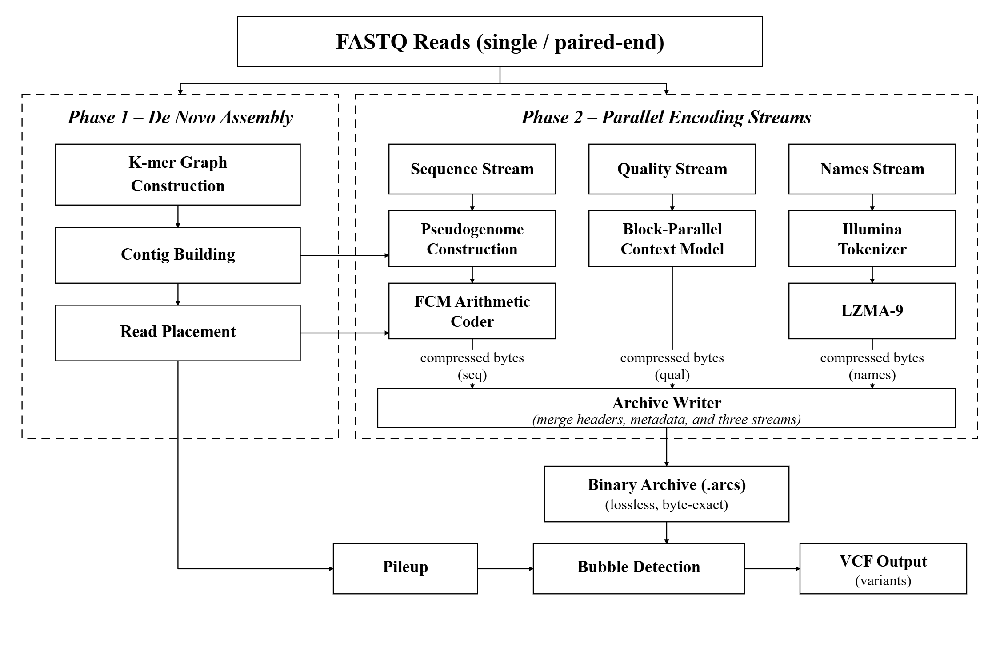
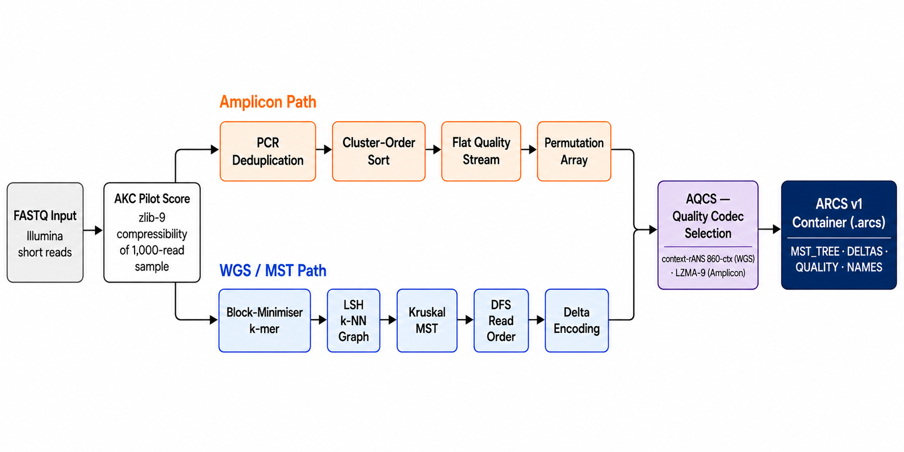

(byproduct of compression)
no external aligner
Architecture

Figure 1.
Phase 1 (De Novo Assembly): k-mer graph construction, contig building, and read placement.
Phase 2 (Parallel Encoding Streams): sequence through pseudogenome construction and FCM
arithmetic coder; quality through block-parallel context model; names through Illumina
tokenizer and LZMA-9. All three streams merge into a single lossless .arcs binary
archive. The placement index simultaneously feeds bubble detection, producing reference-free
VCF output at zero additional cost.
Key Features
Beats Genozip by 14% and SPRING by 23% on GIAB HG002. Wins 8/8 public datasets vs SPRING spanning 4 organisms and read lengths 51–221 bp.
Het-SNV F1 = 0.936 averaged across 4 GIAB individuals (3 ancestries). Zero additional runtime — calls are a byproduct of the compression assembly.
Verified byte-for-byte identical roundtrip on all inputs including CRLF line endings, full Phred 0–93, lowercase/IUPAC bases, and variable-length reads.
--fast-decode: 8–30× faster decompress (0.28 s on GIAB) at only 2% archive overhead. Archive still 12% smaller than Genozip.
No runtime dependencies beyond zlib, liblzma, and pthreads. Builds with CMake on Linux and macOS. Pre-built Linux binary available.
Triploid synthetic data F1 = 0.994–1.000 with ARCS_PLOIDY=3. Homopolymer indel strata: 0.538 vs DiscoSNP++ 0.417.
Compression Results
GIAB HG002 chr20 · 39 MB · 113,987 reads · 150 bp Illumina · native Linux ext4 · byte-lossless roundtrip verified.
| Tool | Archive size | Compress | Decompress | Peak RAM | Byte-lossless |
|---|---|---|---|---|---|
| ARCS | 4.31 MB | 4.4 s | 1.9 s | 366 MB | ✅ yes |
| Genozip 15 | 5.03 MB | 4.8 s | 0.45 s | 382 MB | ✅ yes |
| SPRING | 5.60 MB | 5.0 s | 4.3 s | 319 MB | ✅ yes |
| PgRC2 | 0.245 MB † | 4.5 s | 0.07 s | 88 MB | ❌ lossy quality |
| fqzcomp v4.6 | 7.26 MB | 0.6 s | 0.9 s | 60 MB | ❌ quality remapping |
† PgRC2 default applies lossy quality binning — not a lossless comparison. With --fast-decode: ARCS decompresses in 0.28 s, archive 4.41 MB (still −12% vs Genozip).
Reference-Free Variant Calling
Het-SNV benchmark · 4 GIAB individuals (HG002–HG005) · 3 ancestries · 5 chr20 windows each · scored by rtg vcfeval · frozen parameters.
| Tool | Het-SNV F1 | Precision | Recall | Notes |
|---|---|---|---|---|
| ARCS | 0.936 | 0.991 | 0.886 | zero-cost byproduct of compression |
| DiscoSNP++ | 0.918 | — | — | dedicated reference-free caller |
| Kmer2SNP | 0.532 | — | — | dedicated reference-free caller |
ARCS also calls het-indels (GIAB F1 = 0.505, wins DiscoSNP++ in homopolymer and tandem-repeat strata)
and supports polyploid calling via ARCS_PLOIDY=k.
Detailed Algorithm

Figure 2.
(A) FASTQ reads are loaded and pilot-scored.
(B) A de novo string graph is assembled without a reference.
(C) Reads are placed against assembled contigs.
(D) A compact placement index stores read-to-contig mappings.
(E) The pseudogenome is constructed from linearised contigs; variant evidence is simultaneously extracted via pileup base counts.
(F) Sequences are entropy-coded with an FCM arithmetic coder; heterozygous bubbles in the assembly graph are detected as variant candidates.
(G) The final output is a lossless .arcs binary archive and a reference-free VCF file, produced in a single pass over the input.
Quick Start
Install (Linux pre-built binary)
# Download and install the v2.2.0 pre-built Linux binary
wget https://github.com/thackshanaramana0-spec/ARCS/releases/download/v2.2.0/arcs-linux-x86_64
chmod +x arcs-linux-x86_64
sudo mv arcs-linux-x86_64 /usr/local/bin/arcs
Build from source
git clone https://github.com/thackshanaramana0-spec/ARCS.git cd ARCS cmake -B build -DCMAKE_BUILD_TYPE=Release cmake --build build --parallel $(nproc) ctest --test-dir build
Compress and decompress
# Best-ratio lossless archive arcs compress reads.fastq out.arcs # Fast-decode mode (8-30× faster decompress, ~2% larger archive) arcs compress --fast-decode reads.fastq out.arcs # Decompress (byte-exact; format auto-detected) arcs decompress out.arcs reads_restored.fastq
Variant calling
# Standalone reference-free het-SNV and indel caller arcs call reads.fastq variants.vcf # Fused compress + call in a single pass (byte-identical archive) arcs compress --call reads.fastq out.arcs
Quick lossless test (sample data included)
./build/arcs compress test_data/ecoli_sample.gz out.arcs ./build/arcs decompress out.arcs restored.fastq diff <(zcat test_data/ecoli_sample.gz) restored.fastq && echo "LOSSLESS OK"
Citation
If you use ARCS in your research, please cite: